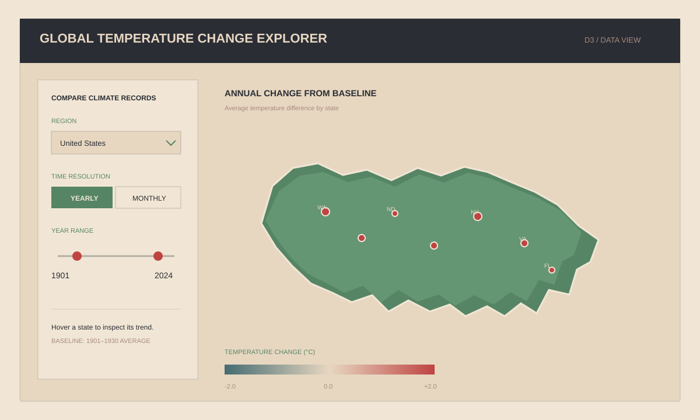
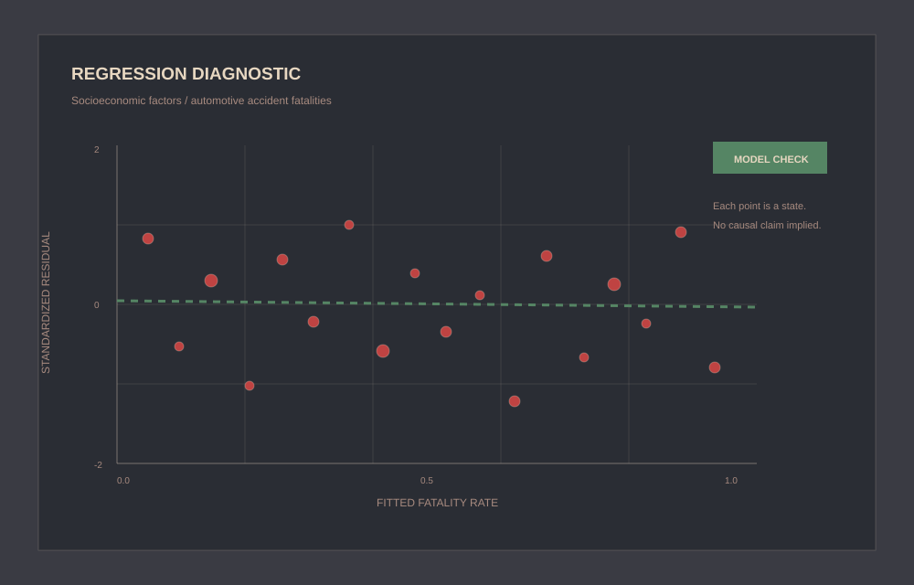
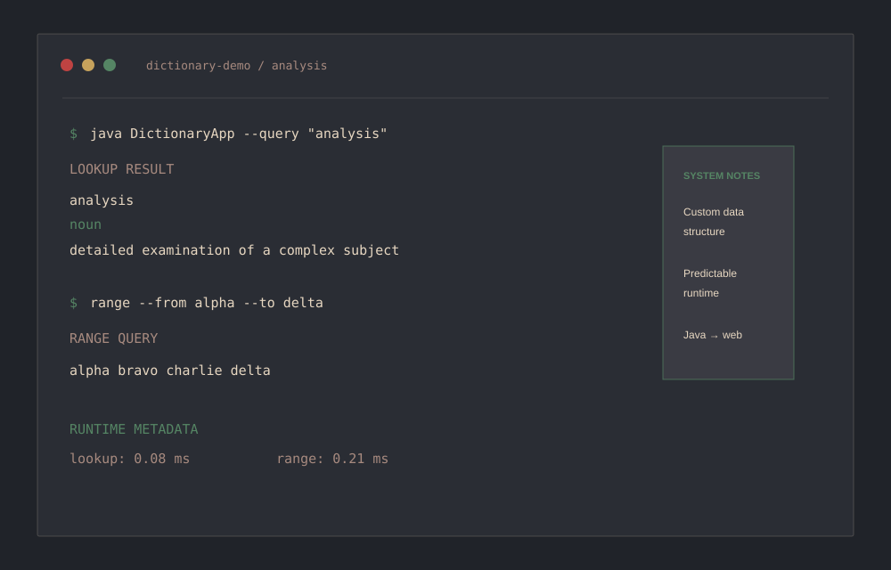

Data analysis
& modeling
Python, SQL, pandas, NumPy, SciPy, exploratory data analysis, statistical reasoning, and machine learning foundations.
James Crawford 2026
I turn complex data into clear analysis, reliable systems, and practical insight.
Get StartedFrom raw data and careful assumptions to tools people can explore and trust.
01 / About
A practical approach to data work: understand the source, make the assumptions visible, and deliver something useful.
I build analytical tools and data-driven projects that make complex information easier to understand and use.
My work brings together data preparation, exploratory analysis, pipeline development, interactive visualization, and software design. Across public-sector, marketing, and manufacturing settings, I focus on transparent assumptions, dependable workflows, and results that help people make better decisions.
Python, SQL, pandas, NumPy, SciPy, exploratory data analysis, statistical reasoning, and machine learning foundations.
Data integration, validation, schema analysis, transformation workflows, Redshift, MySQL, MariaDB, and Git/GitHub.
D3.js, Looker, Tableau, Matplotlib, Seaborn, interactive visualization, and analytical storytelling.
Java, data structures, performance analysis, process optimization, reproducibility, and documentation.
Credentials
Selected credentials supporting a habit of building practical, current skills.
Dassault Systemes · Issued 2026
Global Career Accelerator / OpenAI · 2026
Coursera · Issued 2026
Artwork pendingGlobal Career Accelerator · Issued 2026
Artwork pendingGlobal Career Accelerator · Issued 2026
Artwork pending02 / Work experience
Outcome-focused experience across public-sector analytics, marketing data, and manufacturing systems.
May 2026 — Present
Salt Lake County / Office of Homelessness & Criminal Justice Reform
I support fiscal analysis, data quality, and KPI reporting for public-sector programs by bringing disconnected sources into dependable analytical workflows.
May 2025 — August 2025
Clearlink
I analyzed marketing and customer data, improved access to decision-ready metrics, and helped keep data pipelines reliable for reporting.
May 2023 — August 2023
May 2024 — August 2024
Triumph Gear Systems
I applied data and process-engineering methods to improve production workflows, information quality, and tooling reliability.
Additional experience
03 / Selected projects
A selection of interactive visualization, exploratory analysis, and performance-focused systems work.

Featured / Interactive data visualizationInteractive data visualization
An interactive D3 application that transforms long-term U.S. climate records into state-level comparisons across decades, regions, and time resolution.
The explorer reshapes large climate datasets into browser-ready analytical views, letting visitors compare absolute temperature patterns and relative change at monthly or yearly resolution. It was designed to make long-term trends approachable without requiring a technical background.

Regression diagnosticExploratory data analysis
An exploratory analysis of how state-level socioeconomic indicators relate to fatal motor-vehicle accident rates, with careful attention to correlation, uncertainty, and interpretation.
The project combines public datasets, cleans and joins state-level measures, and uses visual analysis to investigate patterns without overstating causation.

Java system / runtime testingSoftware systems & performance
A dictionary system designed around efficient word lookup and range queries, supported by controlled timing experiments and a browser-based demonstration of the original Java logic.
The project emphasizes custom data-structure design, predictable runtime behavior, and separating implementation, experimentation, and presentation.
Next in the pipeline
Additional work in data science, analytics, and data engineering is on the way.